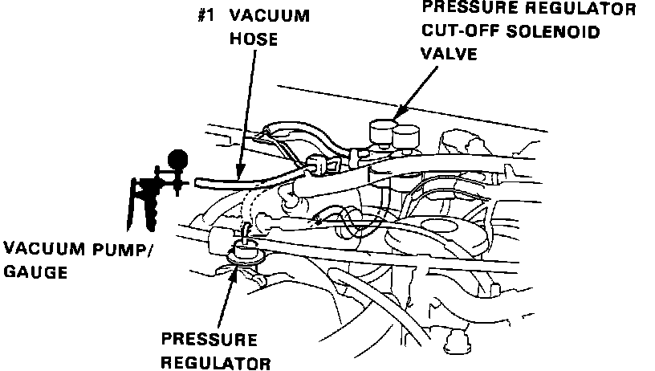
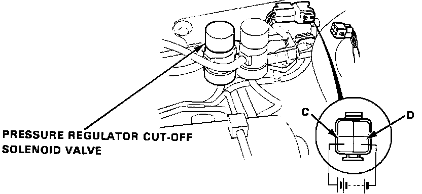
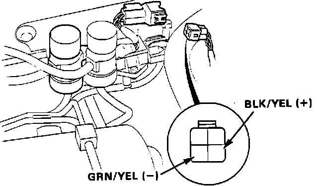
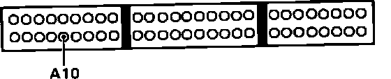

Fuel Pressure Control Solenoid: Testing and Inspection
Pressure Regulator Solenoid Testing:

1. Start engine and run until cooling fan comes on.
2. Disconnect vacuum hose #21 from fuel pressure regulator and connect vacuum pump/gauge.
Vacuum, proceed to step 7.
No vacuum, proceed to next step.
3. Disconnect 4 wire connector from pressure regulator solenoid.
4. Recheck vacuum gauge.
Vacuum, proceed to step .
No vacuum, proceed to next step.
5. Check for short to ground in GRN/YEL wire between ECU terminal C10 and pressure regulator solenoid. If wire checks OK, replace electronic control unit. End of test.
6. Inspect and replace if necessary, vacuum hoses #1 and #21. If hoses check OK, replace pressure regulator solenoid. End of test.
Pressure Regulator Solenoid Connector Identification:

7. Turn ignition off.
8. Disconnect 4 wire connect from pressure regulator solenoid.
9. Using test wires, connect battery voltage to solenoid terminal C and ground to terminal D.
10. Start and idle engine.
11. Check vacuum gauge.
Vacuum, proceed to next step.
No vacuum, replace pressure regulator solenoid. End of test.
Pressure Regulator Solenoid Connector Identification:

12. Check for voltage across BLK/YEL and GRN/YEL harness terminals.
Battery voltage, proceed to step 14.
No battery voltage, proceed to next step.
13. Repair open BLK/YEL wire between fuse #24, in underdash fuse box, and pressure regulator solenoid. End of test.
14. Turn ignition off and reconnect solenoid 4 wire connector.
Pressure Regulator System Testing:

15. Install test harness between ECU and harness connector. If test harness is not available, carefully backprobe wires at ECU connector.
16. Start and idle engine.
17. Using a test wire jumper terminal A10 to ground.
18. Recheck vacuum gauge.
Vacuum, proceed to next step.
No vacuum, proceed to step 20.
19. Repair open GRN/YEL wire between ECU terminal A10 and pressure regulator solenoid. End of test.
20. Pressure regulator cut-off solenoid functioning properly, no further testing required.